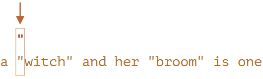
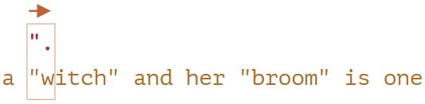
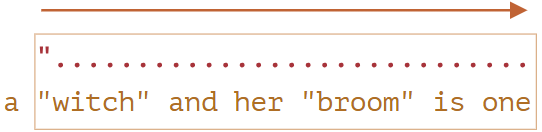
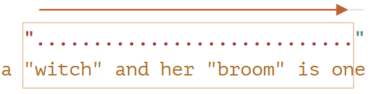
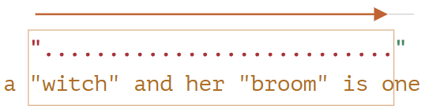
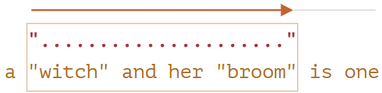
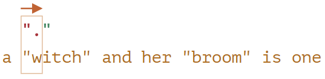
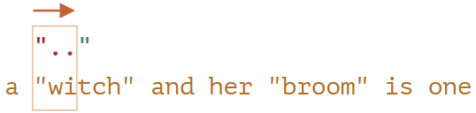
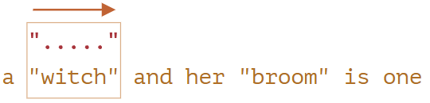
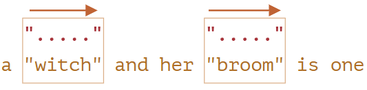

Жадные и ленивые квантификаторы
На первый взгляд квантификаторы - это просто, но на самом деле это не совсем так.
Нужно очень хорошо разбираться, как работает поиск, если планируем искать что-то сложнее, чем
/\d+/.
Давайте в качестве примера рассмотрим следующую задачу:
У нас есть текст, в котором нужно заменить все кавычки "..." на «елочки» «...»,
которые используются в типографике многих стран.
Например: "Привет, мир" должно превратиться в «Привет, мир». Есть и другие кавычки,
вроде „Witam, świat!” (польский язык) или 「你好，世界」 (китайский язык), но для нашей
задачи давайте выберем «...».
Первое, что нам нужно - это найти строки с кавычками, а затем мы сможем их заменить.
Регулярное выражение вроде /".+"/g (кавычка, какой-то текст, другая кавычка) может выглядеть
хорошим решением, но это не так!
Давайте это проверим:
let regexp = /".+"/g;
let str = 'a "witch" and her "broom" is one';
alert(str.match(regexp)); // "witch" and her "broom"
... Как мы видим, регулярное выражение работает не как задумано!
Вместо того чтобы найти два совпадения "witch" и "broom", было найдено одно:
"witch" and her "broom".
Причину можно описать, как «жадность - причина всех зол».
Жадный поиск
Чтобы найти совпадение, движок регулярных выражений работает по следующему алгоритму:
Эти общие слова никак не объясняют, почему регулярное выражение работает неправильно, так что давайте разберем
подробно, как работает шаблон ".+".
-
Первый символ шаблона - это кавычка ".
Движок регулярного выражения пытается найти его на нулевой позиции исходной строки
a "witch" and her "broom" is one, но там - a, так что совпадений нет.
Он продолжает: двигается к следующей позиции исходной строки и пытается найти первый символ шаблона
там. У него не получается, он двигается дальше, и, наконец, находит кавычку на третьей позиции:

-
Кавычка замечена, после чего движок пытается найти совпадение для оставшегося шаблона. Смотрит,
удовлетворяет ли остаток строки шаблону .+".
В нашем случае следующий символ шаблона: . (точка). Она обозначает «любой символ,
кроме новой строки», так что следующая буква строки 'w' подходит.

-
Затем точка повторяется из-за квантификатора .+. Движок регулярного выражения добавляет
к совпадению один символ за другим.
... До каких пор? Точке соответствуют любые символы, так что движок остановится только тогда,
когда достигнет конца строки:

-
Тогда он перестанет повторять .+ и попробует найти следующий символ шаблона. Это кавычка
". Но есть проблема: строка для поиска закончилась, больше нет символов!
Движок регулярного выражения понимает, что захватил слишком много .+ и начинает
отступать.
Другими словами, он сокращает совпадение по квантификатору на один символ:

Теперь он предполагает, что .+ заканчивается за один символ до конца строки и пытается
сопоставить остаток шаблона для этой позиции.
Если бы тут была кавычка, тогда бы поиск закончился, но последний символ - это 'e', так
что он не подходит.
-
... Поэтому движок уменьшает количество повторений .+ еще на один символ:

Кавычка '"' не соответствует 'n'.
-
Движок продолжает возвращаться: он уменьшает количество повторений '.', пока оставшийся
шаблон (в нашем случае '"') не совпадет:

-
Совпадение найдено.
-
Так что первое совпадение: "witch" and her "broom". Если у регулярного выражения стоит
флаг g, то поиск продолжится с того места, где закончился предыдущий. В оставшейся строке
is one нет кавычек, так что совпадений больше не будет.
Это, определенно, не то, что мы ожидали. Но так оно работает.
В жадном режиме (по умолчанию) квантификатор повторяется столько раз, сколько это возможно.
Движок регулярного выражения пытается получить максимальное количество символов, соответствующих .+,
а затем сокращает это количество символ за символом, если остаток шаблона не совпадает.
В нашей задаче мы хотим другого. И нам поможет ленивый режим квантификатора.
Ленивый режим
«Ленивый» режим противоположен «жадному». Он означает: «повторять квантификатор наименьшее количество раз».
Мы можем включить его, вставив знак вопроса '?' после квантификатора, то есть будет
*? или +?, или даже ?? для '?'.
Проясним: обычно знак вопроса ? сам по себе является квантификатором (ноль или один), но,
если он добавлен после другого квантификатора (или даже после самого себя), он получает другое значение -
он меняет режим совпадения с жадного на ленивый.
Регулярное выражение /".+?"/g работает как задумано, оно находит "witch"
и "broom":
let regexp = /".+?"/g;
let str = 'a "witch" and her "broom" is one';
alert(str.match(regexp)); // "witch","broom"
Чтобы лучше понять, что поменялось, давайте рассмотрим процесс поиска шаг за шагом.
-
Первый шаг будет таким же: движок находит начало шаблона '"' за 3-ей позиции:
-
Следующий шаг аналогичен: он найдет совпадений для точки '.':
-
А отсюда поиск продолжится по-другому. Из-за того, что у нас включен ленивый режим для +?,
движок не будет пытаться найти совпадение для точки еще раз, оно становится и попробует найти совпадение
для оставшегося шаблона '"' прямо сейчас:

Если бы на этом месте была кавычка, то поиск бы закончился, но там находится 'i',
то есть совпадения нет.
-
Тогда движок регулярного выражения увеличит количество повторений для точки и попробует еще раз:

Опять неудача. Тогда количество повторений будет увеличено еще и еще...
-
... До тех пор, пока совпадение для оставшегося шаблона не будет найдено:

-
Следующий поиск начнется с того места, где закончилось текущее совпадение и у нас будет еще один
результат:

В этом примере мы увидели, как ленивый режим работает для +?. Квантификаторы *?
и ?? работают аналогичным образом - движок регулярного выражения увеличит количество совпадений,
только если не сможет найти совпадение для оставшегося шаблона на текущей позиции.
Ленивый режим включается только для квантификаторов с ?.
Остальные квантификаторы остаются жадными.
Например:
alert('123 456'.match(/\d+ \d+?/)); // 123 4
-
Шаблон \d+ пытается найти столько цифр, сколько возможно (жадный режим), так что он
находит 123 и останавливается, потому что следующим символом будет пробел ' '.
-
Дальше в шаблоне пробел и в строке тоже, так что есть совпадение.
-
Затем идет \d+?. Квантификатор находится в ленивом режиме, так что он находит одну цифру
4 и проверяет, если ли совпадение для оставшегося шаблона с этого места.
... Но в шаблоне \d+? больше ничего нет.
Ленивый режим ничего не проверяет без необходимости. Шаблон закончился, заканчивается и поиск.
Мы получаем 123 4.
Оптимизации
Современные движки регулярных выражений могут оптимизировать внутренние алгоритмы ради ускорения.
Так что их работа может несколько отличаться от описанного алгоритма.
Но эти внутренние оптимизации для нас незаметны, снаружи все будет работать, как описано.
Сложные регулярные выражения трудно оптимизировать, так что поиск может работать и в точности так,
как было описано.
Альтернативный подход
С регулярными выражениями часть есть несколько путей добиться одного и того же результата.
В нашем случае мы можем найти кавычки без использования ленивого режима с помощью регулярного выражения
"[^"]+":
let regexp = /"[^"]+"/g;
let str = 'a "witch" and her "broom" is one';
alert(str.match(regexp)); // "witch","broom"
Регулярное выражение "[^"]+" получит нужный результат, потому что оно ищет кавычку '"',
за которой следует один или несколько символов «не-кавычек» [^"], а затем - закрывающая кавычка.
Движок регулярного выражения набирает, сколько может, [^"]+, пока не встречает закрывающую
кавычку, на которой останавливается.
Обратите внимание, что эта логика не заменяет ленивые квантификаторы!
Просто она работает по-другому. Временами нужен один вариант, временами - другой.
Давайте посмотрим пример, в котором ленивый квантификатор не справляется, а этот вариант работает правильно.
Например, мы хотим найти ссылки вида <a href="..." class="doc">, с произвольным
href.
Какое регулярное выражение нам нужно использовать?
Первой мыслью может быть: /<a href".*" class="doc"/g.
Давайте проверим:
let str = '...<a href="link" class="doc">...';
let regexp = /<a href=".*" class="doc">/g;
// Работает!
alert(str.match(regexp)); // <a href="link" class="doc">
Регулярное выражение работает. Но давайте посмотрим, что произойдет, если в тексте будет много ссылок?
let str = '...<a href="link1" class="doc">... <a href="link2" class="doc">...';
let regexp = /<a href=".*" class="doc">/g;
// Упс! Две ссылки в одном совпадении!
alert(str.match(regexp)); // <a href="link1" class="doc">... <a href="link2" class="doc">
В данном случае мы получили неправильный результат по той же причине, что в примере с «witch».
Квантификатор .* забирает слишком много символов.
Совпадение будет выглядеть так:
<a href="....................................." class="doc">
<a href="link1" class="doc">... <a href="link2" class="doc">
Давайте изменим шаблон, сделав квантификатор ленивым .*?:
let str = '...<a href="link1" class="doc">... <a href="link2" class="doc">...';
let regexp = /<a href=".*?" class="doc">/g;
// Работает!
alert(str.match(regexp)); // <a href="link1" class="doc">,<a href="link2" class="doc">
Теперь кажется, что все работает правильно. У нас есть два совпадения:
<a href="....." class="doc"> <a href="....." class="doc">
<a href="link1" class="doc">... <a href="link2" class="doc">
... Но давайте попробуем его на еще одном тексте:
let str = '...<a href="link1" class="wrong">... <p style="" class="doc">';
let regexp = /<a href=".*?" class="doc">/g;
// Неправильное совпадение!
alert(str.match(regexp)); // <a href="link1" class="wrong">... <p style="" class="doc">
Ну вот, ленивый квантификатор нас подвел. В совпадении находится не только ссылка, но и текст после нее,
включая <p...>.
Почему?
Происходит следующее:
-
Первым делом регулярное выражение находит начало ссылки <a href=".
-
Затем оно ищет .*?, берет один символ (лениво!) и проверяет, есть ли совпадение
для " class="doc"> (нет).
-
Затем берет другой символ для .*?, и так далее... пока не достигнет " class="doc">.
Поиск завершен.
Но с этим есть проблема: конец совпадения находится уже за границей ссылки <a...>, вообще
в другом теге <p>. Что нам не подходит.
Вот как совпадение выглядит по отношению к исходному тексту:
<a href="..................................." class="doc">
<a href="link1" class="wrong">... <p style="" class="doc">
Итак, нужен шаблон для поиска <a href="...something..." class="doc">, но и с ленивым
и жадным режимами есть проблема.
Правильным вариантом может стать: href="[^"]*". Он найдет все символы внутри атрибута
href до ближайшей следующей кавычки, как раз то, что нам нужно.
Работающий пример:
let str1 = '...<a href="link1" class="wrong">... <p style="" class="doc">...';
let str2 = '...<a href="link1" class="doc">... <a href="link2" class="doc">...';
let regexp = /<a href="[^"]*" class="doc">/g;
// Работает!
alert(str1.match(regexp)); // Совпадений нет, все правильно
alert(str2.match(regexp)); // <a href="link1" class="doc">,<a href="link2" class="doc">